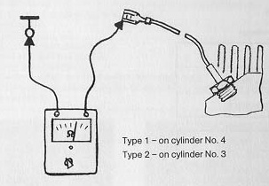

Temperature sensor on cylinder head has no continuity or is shorted.
Disconnect wire from temperature sensor
Connect ohmmeter
Resistance about 2.5kohms (at 20° C/68° F temperature)

Resistance as specified
Ohmmeter reads zero or infinity